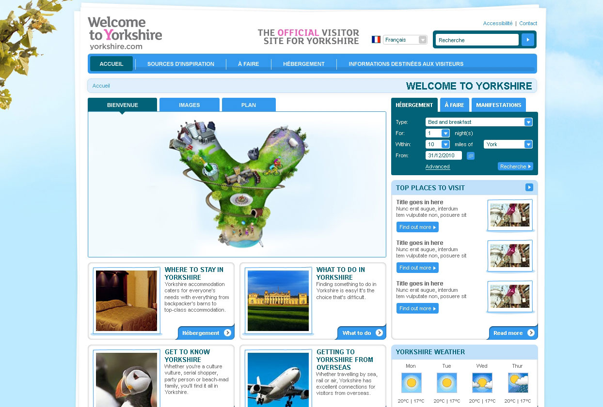

For Yorkshire.com I was tasked with creating the UI for the new website using a number of advanced techniques (for the time) using advanced Jquery, CSS and HTML.
Whist still being accessible to earlier versions of IE such as version 7. The main goal was create the UI to be fast and as usable as possible from a challenging design concept.
I was able to work with the designer and indicate any potential issues the design posed when it came to creating the HTML.
Please find a link below to access the very first HTML template I created before it was added to an Unbraco CMS system.
View archive template
Year: 2009
Role(s): UI Designer and Developer